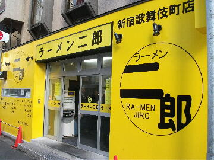
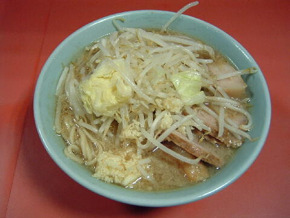
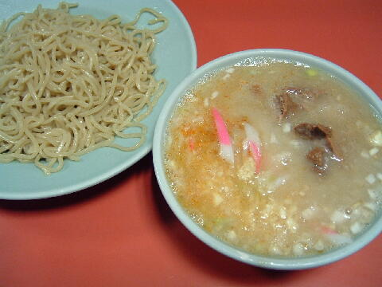

新宿区 歌舞伎町 2-37-5
無
11：30〜27：00
水 11：30〜17：30

ラーメン 700円、ブタ入り 800円、ブタW 900円
大ラーメン 800円、大ブタ入り 900円、大ブタW 1000円
つけめん 800円、大つけめん 900円
味玉子 100円、生とじ卵 100円、メンマ 100円
追加券 100円
店員は、バイト数名。
コショウ、トウガラシ、しょうゆダレ、ラー油。
レンゲ有。ポケットティッシュ有。名刺有。
BGMは、AMラジオ。
トッピングは、本店と同じ。
「ラーメン二郎 歌舞伎町」でヤフー検索
「ラーメン二郎 歌舞伎町」でヤフーリアルタイム検索
「ラーメン二郎 歌舞伎町」でグーグル検索

ブタ入り ニンニク
麺は、二郎標準より細目のストレート麺。
ぶたは、小ぶりだが一般的チャーシューより厚切り。この日は硬めでハズレ。
スープは、甘めでトロみのあるスープ。
ヤサイは、モヤシ8.5：キャベツ1.5の割合。ゆで方はシャキ。
ニンニクは、中粒に刻んだニンニク。からめ。

つけめん ニンニク
トッピングは、ラーメンと同じ。
タレの丼には、チャーシュー、ナルト、メンマ、ヤサイ、キザミネギ、ニンニク。酸味のあるタイプ。
麺の皿には、麺のみ。あつもりは可能。
ＰＣ店